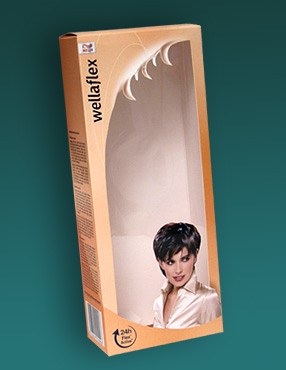

PUDEŁKA Z TEKTURY LITEJ
Tektura lita jest najczęściej używana do produkcji opakowań jednostkowych - pozwala podkreślić atrakcyjność produktu. Pełnokolorowy druk offsetowy, lakier, tłoczenia, często niecodzienny kształt wyróżniają opakowania jednostkowe z tektury litej. Posiadamy wiele wykrojników-wzorów opakowań. Opracowujemy wykrojniki na zamówienie.

